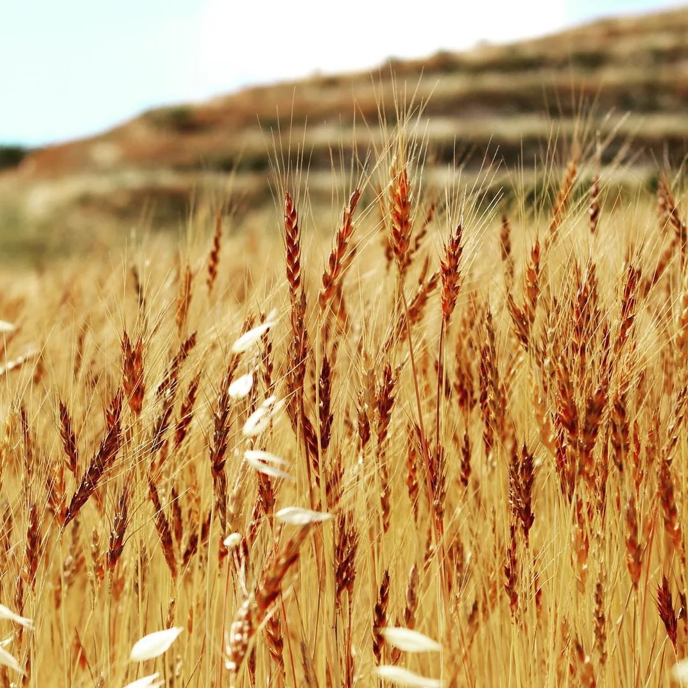

Wheat & grains
Golden wheat fields cover the plains below the town every summer.
From golden wheat to mountain honey: the land that feeds the town.

Chmustar's land goes from the mountain slopes down to the Bekaa plain. This gives farmers two kinds of soil and climate: orchards on the slopes, and grains and vegetables on the plain.
Pines, cypresses and eucalyptus trees also protect the soil and give shade.
Golden wheat fields cover the plains below the town every summer.
Cherries, apricots, peaches, almonds and olives grow on the slopes.
Vineyards benefit from the dry, sunny climate of the Bekaa.
Grown on the fertile plain to the east of the town.
Chmustar is known as one of the main egg producers of the Bekaa.
Local beekeepers produce mountain honey from wild flowers.
| Product | Season | Where |
|---|---|---|
| Cherries & apricots | June – July | Mountain slopes |
| Wheat | June – July | Plain |
| Potatoes | July – September | Plain |
| Grapes | August – October | Slopes |
| Olives | October – November | Slopes |
| Eggs & honey | All year | Local farms |
Farmers: the municipality shares news about support programmes and agricultural guidance on the News page.